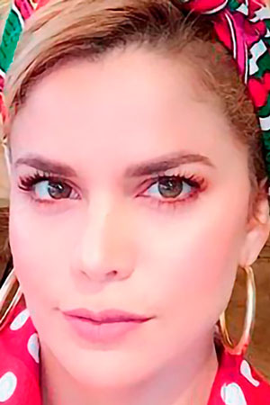

Artista de la semana

ADRIANA LUCÍA
Foto: tomada de @adrianalucia
Desde el Carito, Córdoba y con más de 20 años de carrera artística, a los 14 años lanzó su primer álbum -Enamórate como yo-, que logró ser un éxito nacional y la llevó a recorrer el mundo con el sencillo que llevaba el mismo nombre del álbum, estuvo en el festival de Berlín en 1999, España, Venezuela, México, Perú, Austria, Estados Unidos, entre otros. Adriana Lucía ha sido nominada a importantes premios como los Latin Grammy Awards, premios Heat Latin Music Awards, Premios Shock, Premios Nuestra Tierra, Premios Tv y Novelas, Premios Mi Gente TV y por supuesto ganadora de varios de estos galardones.
Del 1 al 5 Octubre
JESSI URIBE
Foto: tomada de @jessiuribe3
Nació el 22 de marzo de 1987 en Bucaramanga, incursionó en el mundo musical a temprana edad donde demostró su gusto por el canto, el artista representó a Colombia en el famoso concurso Latin America Idol, donde fue elegido entre 30.000 participantes y solo 20 artistas de Colombia fueron a representarnos en Argentina, logrando así formar parte de los 50 mejores de Latinoamérica. En el año 2013 llegó a las finales de uno de los realitys más importantes de nuestro país “A Otro Nivel” después del gran éxito y reconocimiento, decidió continuar con su carrera artística y darse a conocer a nivel nacional e internacional con éxitos como -Repítela- , -Me dices que te vas- y -Matemos las ganas-, con los cuales abrió su carrera en el género popular colombiano conquistando corazones con su carisma y las letras de sus canciones.
Del 8 al 12 Octubre
JORGE CELEDÓN
Foto: Autoría @MiGenteTV
Si de animar al Junior de Barranquilla se trata, Jorge Celedón es el hincha indicado. Desde niño se convirtió en seguidor del Junior, primero por las largas jornadas que pasaba en Barranquilla, y segundo porque es un costeño de pura cepa. Este artista disfruta en sus tiempos libres de un buen partido de su equipo favorito junto a su colección de uniformes, gorras, llaveros y todo lo que sea azul, rojo y blanco.
¿Ustedes creen en la reencarnación?, pues al parecer Jorge Celedón es un fiel seguidor de esta teoría, el intérprete de -Esta vida- tiene como preferencia todas las lecturas que sean relacionadas con este tema y disfruta aprender cada vez más sobre lo que este “mito o realidad” puede deparar.
Del 15 al 19 Octubre
CHRISTIAN NODAL
Foto: Autoría @MiGenteTV
Proviene de una familia integrada por músicos y cantantes. A los 13 años de edad descubrió que tenía la capacidad de componer canciones y se decidió a poner en palabras sus sentimientos y transformarlos en canciones, -Te fallé- de su autoría fue unos de los temas que lo dio a conocer en las redes sociales. En el 2017 lanzó -Adiós amor- que es un cover de Los dareyes de la sierra, haciendo revivir nuevamente el mariachi fusionado al norteño, con un instrumento extra que lo identifica en su género, el acordeón.
Del 22 al 26 Octubre